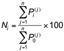

Several items
An aggregate price index combines the prices of several related items into a single index number. The group of items is sometimes referred to as a market basket or basket for short.
There are many examples of aggregate indices – the NZX50 index aggregates the prices of the top 50 companies (as measured by market capitalisation) listed on the New Zealand Stock Exchange, the quarterly Consumers Price Index (or CPI) aggregates the prices of a range of food and related household shopping items and is commonly used as a measure for price inflation in the New Zealand economy.
Unweighted aggregate price index
There are two types of aggregate price indices. The simpler type is known as an unweighted aggregate price index and is so called because it gives equal weight to each item in the basket. If there are n items in the basket then the unweighted aggregate price index in time i is given by

where Pi(j) and P0(j) denote the prices of the j-th item in the basket at time i and at the base time respectively.
This is just a simple price index applied to the sum (or average) of the item prices.
Fish prices in New Zealand
The table below shows the average price of three types of fish in New Zealand from 2005 to 2009 (Source: Statistics NZ website).
| |
Average retail price of fish ($/kg) |
| |
2005 |
2006 |
2007 |
2008 |
2009 |
| Tarakihi |
19.20 |
20.78 |
22.77 |
25.43 |
26.67 |
| Gurnard |
18.41 |
20.15 |
21.93 |
24.32 |
26.42 |
| Snapper |
28.73 |
30.43 |
33.67 |
35.16 |
37.40 |
Using 2005 as the base year an aggregate index for the price of fish can be constructed as follows. The 2006 index number is given by

and aggregate indices for the remaining years can be calculated in a similar fashion. The indices are shown in the table below.
| |
2005 |
2006 |
2007 |
2008 |
2009 |
| Unweighted price index |
100 |
107.57 |
118.13 |
127.99 |
136.40 |
The index values are interpreted in the same way as simple price indices. For example, it can be seen that fish prices were almost 28% higher in 2008 than they were in 2005.